By Scott Selfon, Audio Content Consultant, Content and Design Team, Xbox Advanced Technology Group
One of the most common misconceptions about Microsoft® DirectMusic® is that it does not support multichannel audio. In fact, DirectMusic supports all of the panning, routing, and mixing flexibility of Microsoft® DirectSound®, with the added benefit of being able to dynamically pan voices within content itself. This paper discusses methods for taking advantage of DirectMusic on Xbox® to implement multichannel audio in ways that provide the sound designer with more control over 3D positioning and DSP effects usage.
All DirectMusic content (segments and waves) is played on audiopaths. An audiopath tells the data how it is to be routed; that is, whether it should be mono, stereo, stereo with reverberation, 3D-positioned, and so on. Multiple sounds can be played onto a single audiopath. For instance, all sounds played onto a specific 3D audiopath are simply mixed together and positioned in 3D space (at the cost of one of the sixty-four 3D HRTF-capable voices, rather than one 3D voice per sound).
Audiopaths also come into play for MIDI and DLS music and sound effects. Each audiopath can be thought of as its own virtual synthesizer; while they all share the same memory for wave data, each has its own unique set of performance channels (effectively MIDI channels without 16-channel limitations). So, while two pieces of music with different instruments on the same channel would clash when played on the same audiopath (the patch change and other MIDI controllers sent by one would override the other), they will both play properly and independently if played on different audiopaths.1
Several standard audiopaths are defined, which can be used by developers in addition to custom audiopath configurations authored in DirectMusic Producer for the Xbox Audiopath Designer module.2
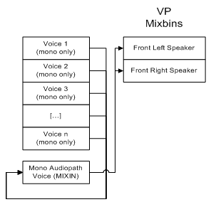
Illustration Default routing for a standard mono audiopath.
A standard mono audiopath requires that all voices played on it be mono.3 The voices are mixed into an extra voice before being routed by default to the front-left and front-right speakers. This means that each mono audiopath (as well as 3D audiopaths) take one extra voice in addition to the number of voices actually playing on it. A developer can access this mix-in buffer and treat it like any other mix-in buffer, altering the volume levels it independently sends to up to eight Voice Processor mixbins.4 Of course, each voice retains independent volume control using wave-attenuation properties (for wave files and wave tracks in segments), velocity for MIDI+DLS notes, and per-channel standard MIDI control for volume (continuous controller 7) and expression (CC 11).
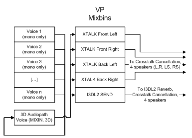
Illustration Default routing for a standard 3D audiopath.
Standard 3D audiopaths are similar to standard mono audiopaths, except that they use one of the 64 HRTF-capable 3D voices to mix into. As with DirectSound 3D buffers, this voice then defaults to routing to the crosstalk mixbins and the I3DL2 Send.5 "Panning" among the four directional channels (along with filtering, doppler, and so on) is determined by the 3D position of the buffer ("source") relative to the listener. Volume and expression MIDI controllers can still be used per channel to control the volume of the mix, and attenuation can be set independently per wave.
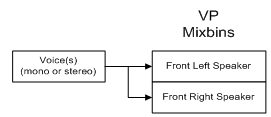
Illustration Routing for a standard stereo audiopath. If a source voice is stereo, the left channel is routed to the front-left speaker and the right channel is routed to the front-right speaker. Mono voices are routed to both speakers.
Note that no mix-in buffer is used, so each voice is routed directly to the VP mixbins. The two channels of a stereo wave are routed respectively to the left and right mixbins. Mono waves and DLS instruments can be panned between the two mixbins via MIDI continuous controller 10 (pan). As before, global volume for each performance channel can be controlled using MIDI continuous controllers 7 (volume) and 11 (expression). Multichannel (4- or 6-channel) waves are not supported on stereo audiopaths.
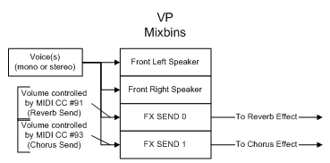
Illustration Routing for a standard stereo and reverb audiopath.
Stereo and reverb audiopaths are similar to stereo audiopaths, except that two extra mixbins are added as sends-FX SEND 0 and FX SEND 1. In the default DSP effects image (dsstdfx.bin), FX SEND 0 is routed to a music reverb effect (a separate instance of I3DL2 reverb from the 3D "environmental" reverb), and FX SEND 1 is routed to a chorus effect. Content can then use MIDI controllers 91 (reverb send volume) and 93 (chorus send volume) to manage, per performance channel, how much reverb and chorus is added to played waves and DLS instruments.6 Of course, different effects could be placed in a custom DSP effects image to allow for content-driven sends to effects besides chorus and reverb.
Note that volume and expression MIDI controllers apply per performance channel to all four of these mixbins. Pan can be used to control the relative volume between the left and right speakers, but this means that in stereo and reverb audiopaths, there is no way to send a wave solely to either of the FX SEND mixbins without also sending it to at least one of the speakers. For that functionality, use a mono audiopath or the mixbin audiopaths discussed below.
As with stereo audiopaths, multichannel (4- or 6-channel) waves are not supported on stereo and reverb audiopaths.
Several new mixbin audiopath types were first made available in the December 2001 release of the Xbox Development Kit (XDK). These audiopath types allow for the use of MIDI controllers to drive volume to the various speakers, as well as more flexible routing (and dynamic send volume control) of DirectMusic content to FX SEND mixbins for effects processing. Note that these audiopaths do not support MIDI continuous controllers 10 (pan), 91 (reverb send), or 93 (chorus send), as those assumed specific mixbin usage and channel configuration (namely, stereo). Instead, volume to each of eight maximum mixbins is controlled using Mixbin Send Volume Controllers, which use MIDI continuous controllers 102–109.
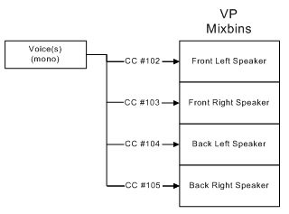
Illustration Routing for mono voices on a standard mixbin quad audiopath.
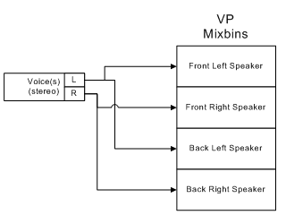
Illustration Routing for stereo voices on a standard mixbin quad audiopath (same MIDI controllers supported as for mono).
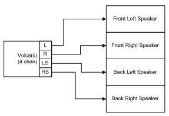
Illustration Routing for pre-rendered four-channel voices on a standard quad audiopath (same MIDI controllers supported). Note that a four-channel wave actually occupies two hardware stereo voices.
MIDI Continuous Controllers 102–105 control the volume sent to each speaker on a per-channel basis. Volume and expression continuous controllers still control global volume per channel. Note that for stereo waves, the left channel is directed to the left and back-left speakers, and the right channel is directed to the right and back-right speakers. To reemphasize: pan, reverb send, and chorus send are non-functional. Playing a six-channel wave on a quad audiopath is not allowed.
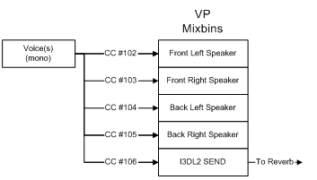
Illustration Routing for mono voices on a standard mixbin quad + environmental audiopath.
Note that the number of mixbins a wave is routed to must be a multiple of the number of channels in that wave, so a four-channel wave cannot be played on a quad + environmental reverb audiopath (five mixbins). For this same reason, stereo waves cannot be played on this type of audiopath. And again, based on the effects image you create, the I3DL2 Send could go to any effect or series of effects that you wish, not just a reverb.
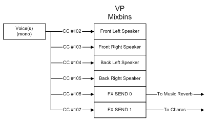
Illustration Routing for mono voices on a standard mixbin quad + environmental audiopath. Stereo voices are also supported.
Again, four-channel source waves cannot be played on this kind of an audiopath, as the number of mixbins is not a multiple of the number of source channels. However, both mono and stereo waves are supported. In the current implementation, stereo waves will alternate mixbin assignments, so the left channel would be sent to the front-left, back-left, and FX SEND 0 mixbins, while the right channel would be sent to the front-right, back-right, and FX SEND 1 mixbins. As with standard stereo and reverb audiopaths, it's somewhat arbitrary that FX SEND 0 is sent to a music reverb and FX SEND 1 is sent to a chorus; they could be used in any effects chain that you want. But remember that the reverb and chorus send MIDI controllers (91 and 93) are not used here.
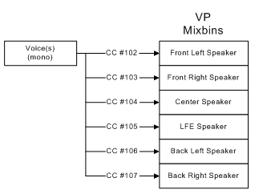
Illustration Routing for mono voices on a standard 5.1 audiopath. Stereo voices are also supported.
This is the audiopath used for playing pre-rendered (though not AC-3 encoded7) six-channel wave files. It can also be used for real-time rendered 5.1 ambience, music, and sound effects. MIDI send volume controllers allow you to manipulate per performance channel how much volume is sent to each of the 5.1 speakers. As this is a six-mixbin audiopath, both mono and stereo waves are supported. The two channels of a stereo wave are routed to alternating speakers (left to front-left, center, back-left; right to front-right, LFE, back-right).
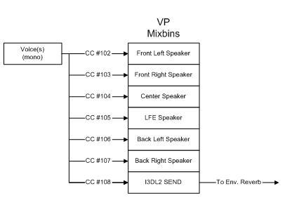
Illustration Routing for mono voices on a standard 5.1 + environmental reverb audiopath.
As this is a seven-mixbin routing, only mono source voices are supported. For pre-rendered 5.1 wave files, use a standard 5.1 audiopath.
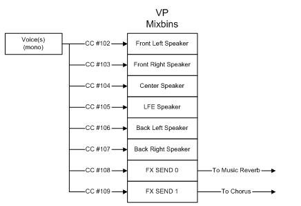
Illustration Routing for mono voices on a standard 5.1 + music reverb audiopath. Stereo and four-channel waves can also be played.
This standard audiopath uses all eight possible mixbin destinations, so all eight MIDI controllers (CC #102–109) can be used for panning. Note that since we have eight mixbins, mono, stereo, and four channel waves are supported (although, as we'll see in a moment, the routing used may not be desired). The two channels of stereo waves will again be sent to alternating mixbins, as will four-channel waves. Specifically:
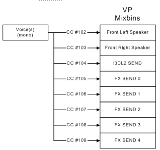
Illustration Routing for mono voices on a standard mixbin stereo + effects audiopath. Stereo and four channel waves can also be played.
This is the other standard mixbin type that sends its voices to the maximum number of destination mixbins (eight). Again, this means that mono, stereo, and four-channel waves are supported, although in this last case, the third and fourth channels would not go directly to any speaker mixbins.
If none of the above provide the routing you wish to use, a developer can create a custom mixbin audiopath type at run time, using any eight of the 31 non-chaining mixbin flags in the dwType parameter of their call to IDirectMusicPerformance8::CreateStandardAudiopath. Note that with the current implementation, how these mixbins are ordered (that is, which mixbin MIDI controller #102 will affect versus #103, #104, and so on) is preset based on the hardware mixbin ordering.8 Specifically, the mixbins are ordered as follows: front-left, front-right, center, LFE, back-left, back-right, XTalk front-left, XTalk front-right, XTalk back-left, XTalk back-right, I3DL2 Send, and FX Send 0–19. So regardless of order in which the mixbin flags are specified, they will be ordered based on this list. For instance, specifying the center and front-left speakers for an audiopath will still have CC #102 applying to the front-left speaker and CC #103 applying to the center speaker, as the left speaker comes first in the above list of mixbins.
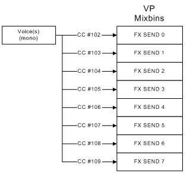
Illustration Example of a custom mixbin audiopath. This would be the result of calling IDirectMusicPerformance8::CreateStandardAudioPath with dwFlags set to DSMIXBIN_FXSEND_0 | DSMIXBIN_FXSEND_1 | DSMIXBIN_FXSEND_2 | DSMIXBIN_FXSEND_3 | DSMIXBIN_FXSEND_4 | DSMIXBIN_FXSEND_5 | DSMIXBIN_FXSEND_6 | DSMIXBIN_FXSEND_7. As this audiopath specifies eight mixbins, mono, stereo, and four-channel waves could be played on it.
With these eight new controllers, as well as existing MIDI controllers for pan, volume, expression, reverb send, and chorus send, a common question would be what values each of these controllers default to. That is, if a developer creates an audiopath as above and plays content that doesn't touch any MIDI controllers, what will be the volume to the various mixbins?
The following is the behavior of the Xbox audio hardware as used by DirectMusic:
This last number of course means that by default, your content will play at fairly close to full volume out of all speakers used by your mixbin-based audiopath unless you set channels to be more quiet up front. Remember that volume and expression are additively applied to the entire mix (all sends), while the other controllers apply to a particular mixbin's volume relative to the full mix.
Xbox audiopaths provide one of the first opportunities to author MIDI-style scores that allow for independent volume control over each speaker. In addition, audiopaths allow you to use DirectMusic to mix various sounds into a single buffer that can be 3D-positioned dynamically by a game. Audiopaths allow you to submix your content dynamically, sending sounds to speakers, reverberation, and other dynamically applicable and modifiable effects. The content itself can control volume levels using pre-defined MIDI controllers like volume and expression as well as newly defined send volume controllers available per mixbin.
For more information about topics presented here, please consult the Xbox Audio Best Practices Guide, the XDK documentation, the white papers in the Audio Designer's Corner, or send an e-mail message to content@xbox.com.
1 For a more complete discussion of audiopaths as they relate to performance channel usage, see the white paper Crossfade Solutions Using DirectMusic: Volume Controller Curves, Audiopaths, and DirectX Audio Scripting.
2 Current support for custom audiopath authoring is fairly limited, although it does provide some flexibility in the area of performance channel-routing. Added support is planned for a future release of DirectMusic Producer for Xbox.
3 In releases of DirectMusic prior to the November 2001 XDK, multichannel wave files were deinterleaved to separate mono channels. In this manner, stereo waves actually could be played on mono audiopaths, though each stereo wave would take two voices. In the November 2001 XDK, DirectMusic added support for true stereo voices (as the non-3D Xbox MCP hardware voices support). For this reason, in November and beyond, playing stereo or multichannel waves on a mono audiopath is not allowed, and will cause an assertion (as it does in DirectSound).
4 The developer can obtain access to the DirectSound mix-in buffer used by a mono or 3D audiopath via IDirectMusicAudioPath8::GetObjectInPath. See the XDK documentation for sample code that accomplishes this.
5 In a typical DSP effects program running on the Global Processor, the I3DL2 send mixbin applies a four-channel I3DL2 reverb, then crosstalk cancellation is applied to both the reverb and the four crosstalk mixbins before the audio is routed to the four directional speaker mixbins for Dolby® Digital encoding and Dolby® Surround, stereo, or mono mixdown. For more details, see the white paper Authoring and Auditioning Effects Programs.
6 Note that, as mentioned previously, DirectMusic does not de-interleave stereo voices in the December 2001 and more recent XDKs. This means that in particular for stereo and reverb audiopaths, a situation discussed more thoroughly in the mixbin audiopaths arises-the two channels of any stereo waves will be sent to alternating mixbins. Thus, the left channel will be routed to the front-left mixbin as well as the reverb send (FX SEND 0), and the right channel will be routed to the front-right mixbin as well as chorus send (FX SEND 1). Mono waves and mono DLS instruments will be routed to both effects. As reverb and chorus effects with stereo input are available, you could create a combination of a DSP binary effects program and a custom mixbin audiopath that accepts stereo waves for both reverb and chorus effects.
7 The playback of pre-encoded waves is supported on Xbox, but not generally used. Certification requires that you supply audio on the analog line (probably stereo), and you are bypassing the entire Xbox audio system, so volume control, mixing, routing, and effects are no longer accessible. For more information, see The Surround Experience: Authoring for and Implementing Multichannel Audio Playback.
8 The November version of DirectSound reimplemented mixbin routing to overcome this ordering limitation. DirectMusic will use these methods in a future release.
Monday, January 14, 2002